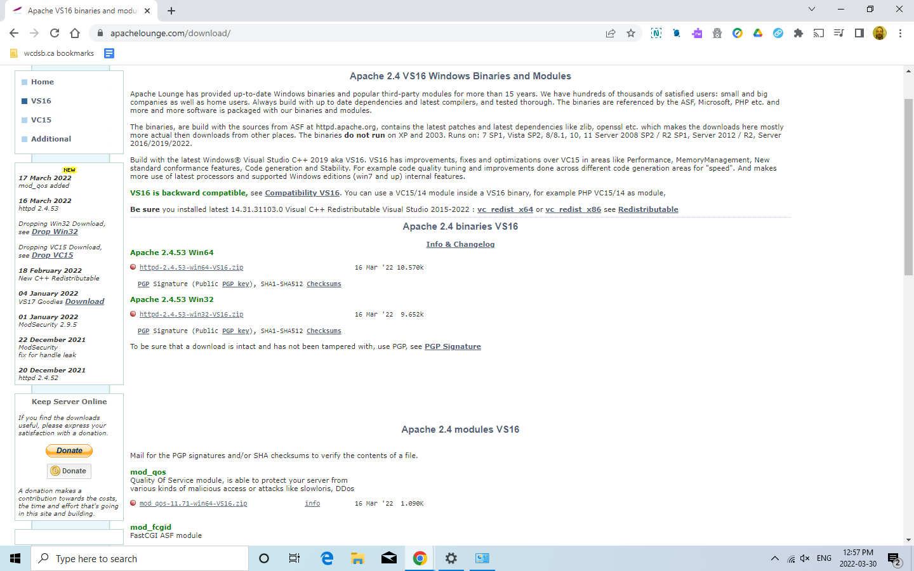
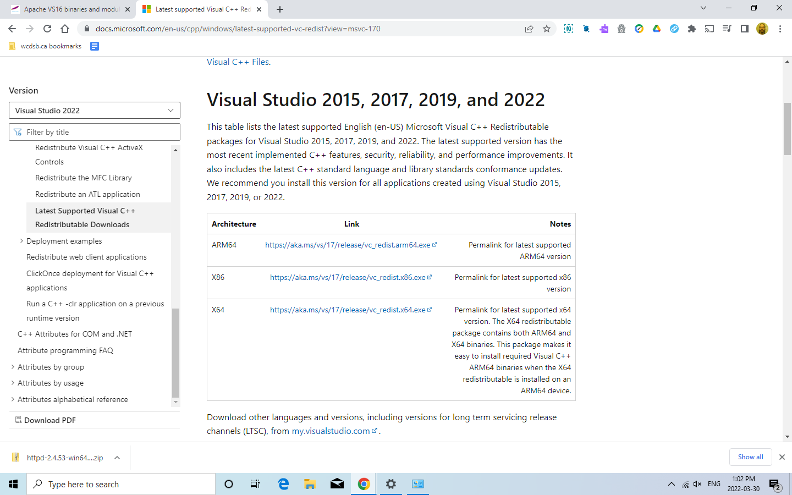
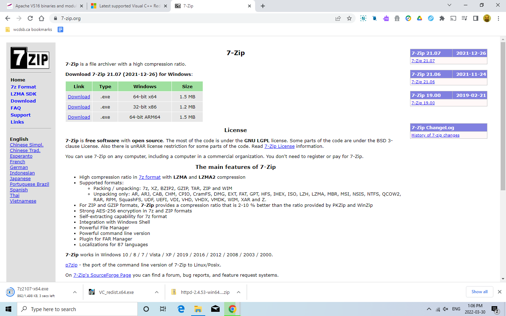
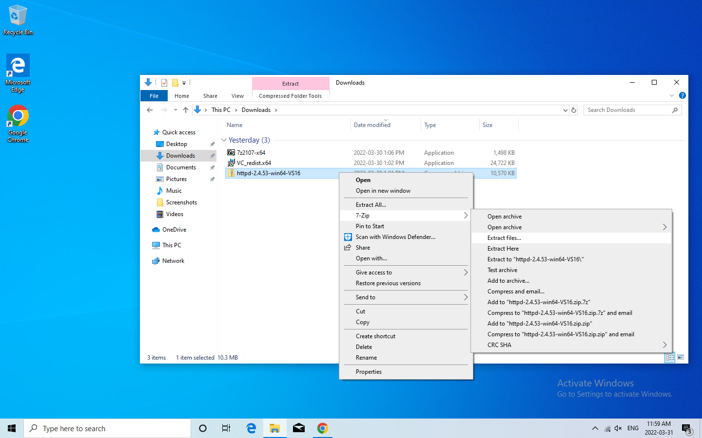
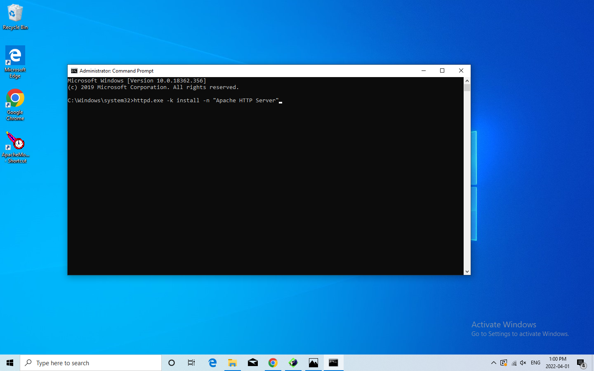
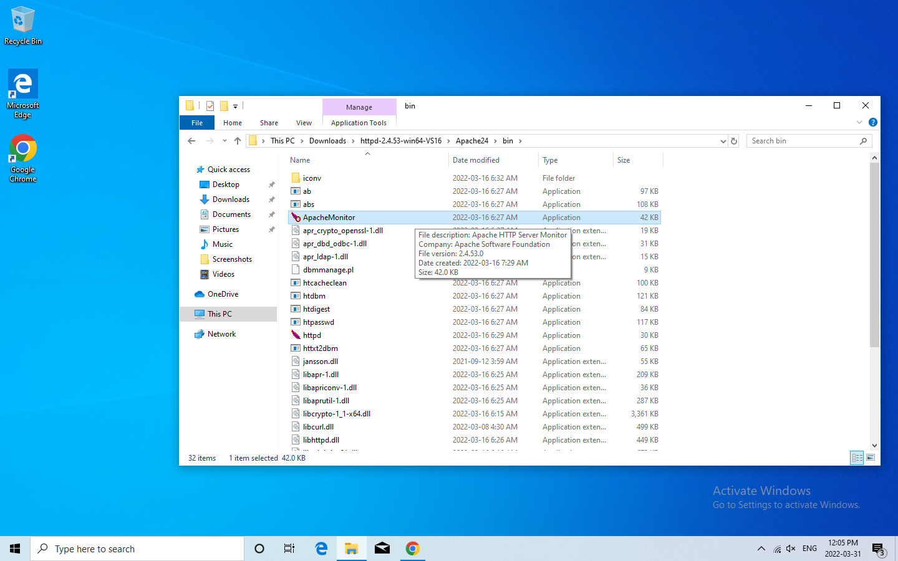

in 7 Steps
Step 1
The first step to downloading Apache is to download the binary from Apache Lounge. Make sure to download the version that works with your machine. In this case, I have a Windows 64-bit so that is the version of Apache I downloaded.
Step 2
The second step is to make sure you have Microsoft Visual C++ Redistributable downloaded. This download can be found directly from Microsoft. It is necessary for Apache to even work.

Once Apache downloads, it will be in a zip file. This requires a separate program to unzip it. I decided to use 7-Zip as it is easy to use. Make sure to download and run it so it will be ready to extract the Apache files.
Now, it is time to extract Apache using 7-Zip. You will want to open up your downloads, right-click on the Apache zip file and then navigate to "Extract Files" in 7-Zip. Make sure to extract the files into the hard drive you will be using, in this case, the C drive.
To properly install Apache, you will want to type this into Command Prompt as an administrator. After this, you should have Apache downloaded.
To check that Apache is working and active, run this executable file found in the bin folder of Apache. You will want to right-click and open it from the taskbar and you should find Apache listed under Servers. If it is inactive, make sure to activate it.
